데이터 & 폴더 활용하기#
Backend.AI는 사용자의 파일을 안전하게 보관할 수 있도록 전용 저장소를 제공합니다. 연산 세션이 종료되면 세션 내에서 생성된 모든 파일과 디렉터리가 삭제되므로, 중요한 데이터는 반드시 스토리지 폴더에 저장하는 것이 좋습니다. 스토리지 폴더 목록은 사이드바의 데이터 페이지에서 확인합니다. 이 목록에는 폴더 이름과 ID, 폴더가 위치한 스토리지 호스트(위치), 폴더의 접근 권한(권한) 등 주요 정보가 표시됩니다.
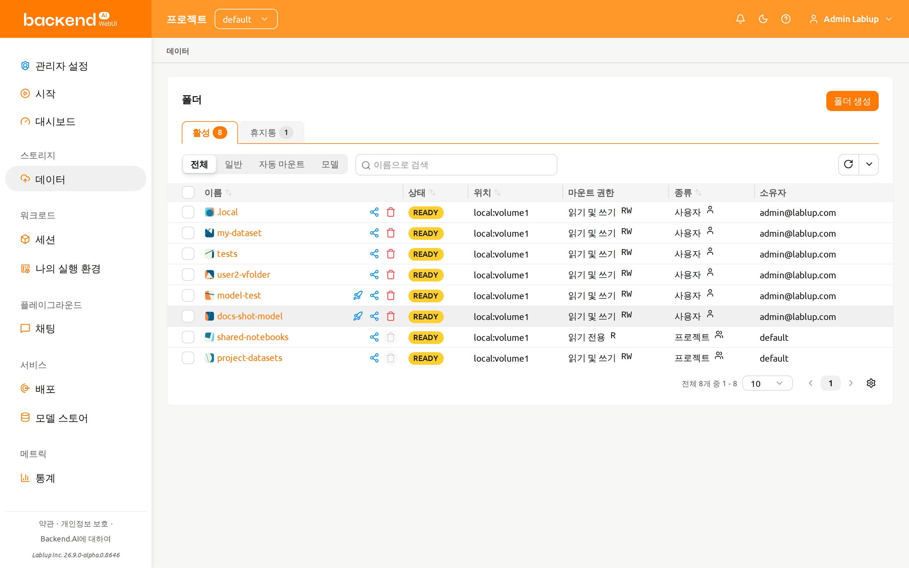
스토리지 폴더에는 사용자와 프로젝트 두 가지 유형이 있으며, '종류' 열에서 구분합니다.
초대 배지 및 진입점#
다른 사용자가 자신의 스토리지 폴더를 공유하기 위해 초대를 보내면, 사이드바의 데이터 페이지 항목과 폴더 상태 요약 옆에 작은 초대 배지가 표시됩니다. 배지에는 아직 응답하지 않은 대기 중인 초대의 개수가 함께 표시됩니다.
배지를 클릭하면 초대 목록이 열리며, 대기 중인 초대를 각각 수락하거나 거절합니다.
수락한 폴더는 즉시 폴더 목록에 초대받음 유형으로 표시됩니다. /data 페이지
자체도 초대를 검토하는 유효한 진입점입니다. 데이터 페이지를 열면 폴더 상태 요약에서
동일한 초대 목록에 접근할 수 있습니다.
스토리지 폴더 생성#
새 폴더를 만들려면 데이터 페이지에서 폴더 생성을 클릭합니다. 생성 대화 상자의 필드를 다음과 같이 채웁니다.
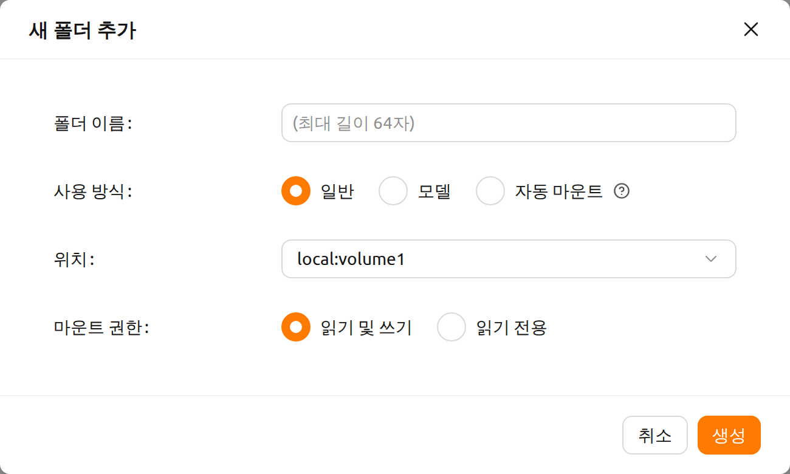
생성 대화 상자의 각 필드 의미는 다음과 같습니다.
폴더 이름: 폴더명을 입력합니다 (최대 64자).
사용 방식: 폴더의 용도를 설정합니다.
- 일반: 다양한 데이터를 범용 목적으로 저장하는 폴더입니다.
- 모델: 배포 및 관리에 특화된 폴더입니다. 이 모드를 선택하면 폴더 복사 가능 여부를 설정할 수 있습니다.
- 자동 마운트: 연산 세션을 만들 때 자동으로 마운트되는 폴더입니다. 이름은 반드시 점('.')으로 시작해야 합니다.
위치: 폴더를 생성할 스토리지 호스트를 선택합니다. 여러 호스트가 있을 경우 각각의 사용 가능 용량을 확인한 후 적절한 호스트를 선택하세요.
마운트 권한: 폴더가 연산 세션에 마운트될 때 적용되는 마운트 권한입니다. 읽기 및 쓰기는 세션 내에서 폴더에 쓰기를 허용하고, 읽기 전용은 쓰기를 막습니다.
복사 가능 여부: 사용 방식이 "모델"로 설정된 경우에만 표시됩니다. 생성하는 가상 폴더(vfolder)가 복사 가능한지 여부를 선택합니다.
데이터 페이지에서 생성한 폴더는 항상 사용자 폴더입니다. 프로젝트 폴더는 관리자가 관리자용 데이터 페이지에서 생성합니다.
여기서 생성한 폴더는 연산 세션 생성 시 마운트할 수 있습니다. 폴더는 사용자의 기본 작업 디렉토리인 /home/work/ 아래에 마운트되며, 마운트된 디렉토리에 저장된 파일은 연산 세션이 종료되어도 삭제되지 않습니다.
(폴더를 삭제하면 파일도 함께 삭제됩니다.)
폴더 내용 조회하기#
폴더 이름을 클릭하면 해당 폴더의 내용을 조회하는 파일 탐색기가 열립니다.

폴더 탐색기는 두 패널 레이아웃으로 구성됩니다.
- 왼쪽 패널: 스토리지 폴더의 디렉토리 트리와 파일 목록을 표시하는 파일 브라우저.
- 오른쪽 패널: 두 개의 탭으로 구성된 추가 정보 및 로그:
- 메타데이터: 폴더 설명 및 속성 (이전에는 사이드 패널로 표시).
- 감사 로그: 이 폴더에서 수행된 작업의 시간순 기록.
넓은 화면(xl 이상)에서는 드래그 가능한 구분선으로 두 패널을 분리해 워크플로우에 맞게 크기를 조절합니다. 좁은 화면에서는 패널이 세로로 쌓입니다.

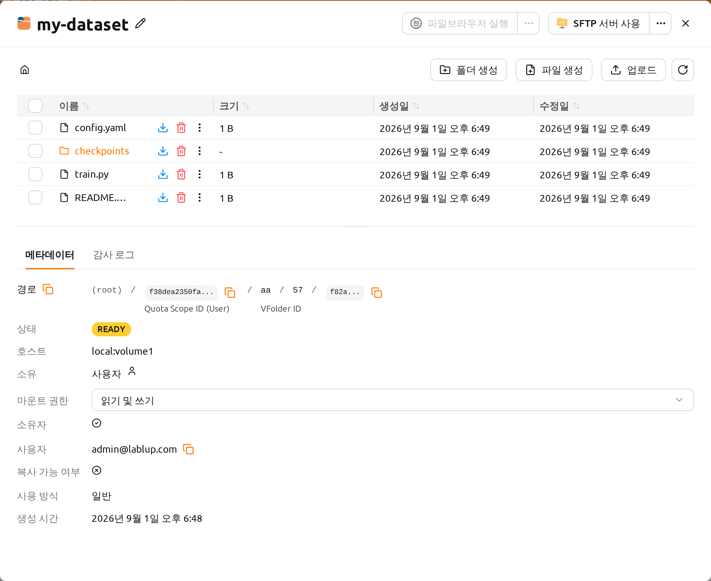
파일 작업#
왼쪽 패널에서 폴더 내의 모든 디렉토리와 파일을 확인합니다. 이름 열에 있는 디렉토리 이름을 클릭하면 해당 디렉토리로 이동합니다. 각 행의 작업 버튼은 이름 열의 항목 이름 옆에 있습니다. 다운로드 버튼을 클릭하면 파일이나 디렉토리를 다운로드하고, 삭제 버튼을 클릭하면 삭제하며, 이름 옆의 연필(이름 변경) 버튼을 클릭하면 이름을 그 자리에서 변경합니다. 열 너비가 좁아 모든 버튼을 표시할 수 없는 경우, 나머지 작업은 같은 행의 추가 작업(⋮) 메뉴로 이동합니다. 보다 세밀한 파일 작업이 필요하다면 이 폴더를 연산 세션 생성 시 마운트한 뒤 터미널이나 Jupyter Notebook 등과 같은 서비스로 수행하세요.
폴더 생성 버튼으로 현재 경로에 새로운 폴더를 생성하고, 업로드 버튼으로 현재 경로에 로컬 파일 혹은 폴더를 업로드합니다. 이러한 파일 작업은 앞서 설명한 연산 세션 마운트 방식으로도 모두 수행할 수 있습니다.
해당 폴더가 위치한 스토리지 호스트에 대한 upload-file 권한과 폴더 자체에 대한 쓰기 권한을
모두 보유해야 업로드할 수 있습니다. 둘 중 하나라도 없으면 업로드 버튼(및 드래그 앤
드롭 업로드)은 비활성화됩니다. 버튼 자체는 표시되지만 회색으로 변하며, 툴팁에 업로드가
허용되지 않는다는 안내가 표시됩니다.
upload-file은 호스트 수준의 권한으로, 도메인 권한, 프로젝트 권한, 또는
키페어 자원 정책 중 하나라도 해당 스토리지 호스트에 이 권한을 부여하면 업로드가
허용됩니다. 버튼이 비활성화되어 있다면 관리자에게 해당 호스트에 대한 upload-file
권한을 부여해 달라고 요청하세요. 폴더가 어떤 호스트에 위치해 있는지는 폴더 목록의
위치 열이나 폴더 상세 드로어에서 확인합니다.
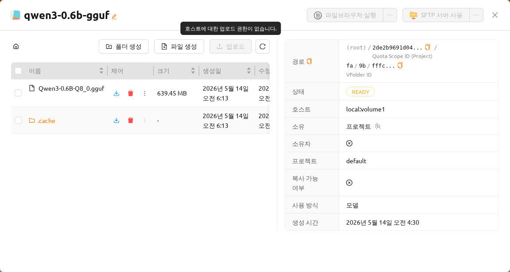
폴더 내 파일 또는 디렉토리의 최대 이름 길이는 호스트 파일 시스템에 따라 달라질 수 있습니다. 일반적으로 255자를 초과할 수 없습니다.
원활한 성능 유지를 위해 너무 많은 파일이 포함된 디렉토리에서는 화면에 표시되는 파일 수에 제한이 있습니다. 파일이 많은 폴더의 경우 일부 파일이 화면에 보이지 않을 수 있습니다. 이 경우 터미널이나 기타 앱을 이용해 해당 디렉토리의 모든 파일을 확인해 주세요.
텍스트 파일 편집#
폴더 탐색기에서 텍스트 파일을 직접 편집합니다. 폴더 이름을 클릭하여 파일 탐색기를 연 다음, 이름 열에서 해당 텍스트 파일 행의 추가 작업(⋮) 메뉴를 열고 파일 편집을 선택합니다.
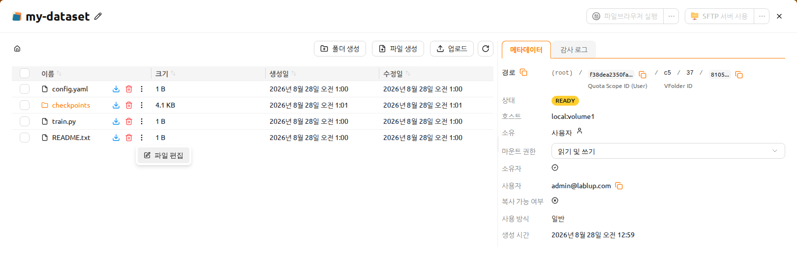
텍스트 파일 편집기가 코드 편집기 인터페이스와 함께 모달로 열립니다. 편집기는 파일 확장자를 기반으로 파일 유형을 자동으로 감지하고 적절한 구문 강조를 적용합니다(예: Python, JavaScript, Markdown). 모달 제목에는 파일 이름과 크기가 표시됩니다.
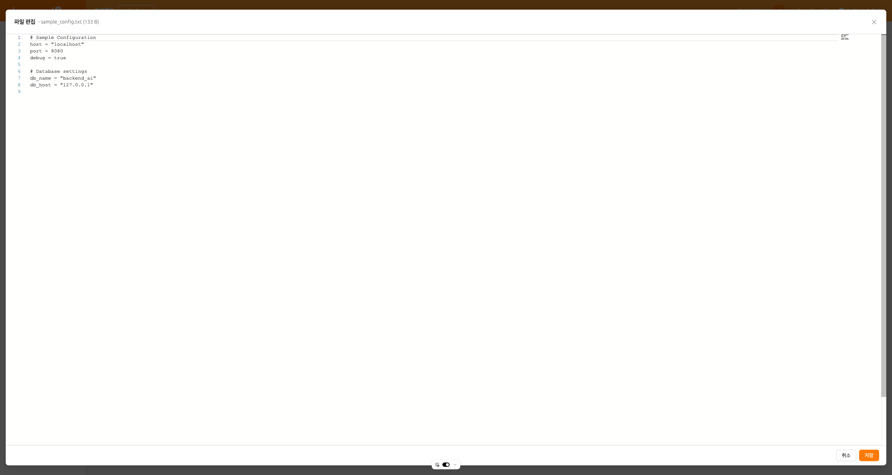
편집기는 UI 환경 설정과 일치하는 라이트 및 다크 테마를 모두 지원합니다. 파일 내용을 편집한 후 저장을 클릭하면 수정된 파일이 업로드되고, 취소를 클릭하면 변경 사항이 취소됩니다.
편집기에서 저장하면 수정한 파일이 업로드되므로, 파일 편집 작업에는 해당 스토리지 폴더에 대한 write_content 권한(폴더 공유 권한 또는 폴더에 부여된 역할로 부여됨)과 폴더가 위치한 스토리지 호스트에 대한 upload-file 권한이 모두 필요합니다. 둘 중 하나라도 없으면 이 작업을 사용할 수 없습니다. 파일 로드에 실패하면 오류 메시지가 표시됩니다.
감사 로그 탭#
오른쪽 패널의 감사 로그 탭에는 이 스토리지 폴더에서 수행된 모든 작업(생성, 수정, 삭제 이벤트 등)의 시간순 목록이 표시됩니다.
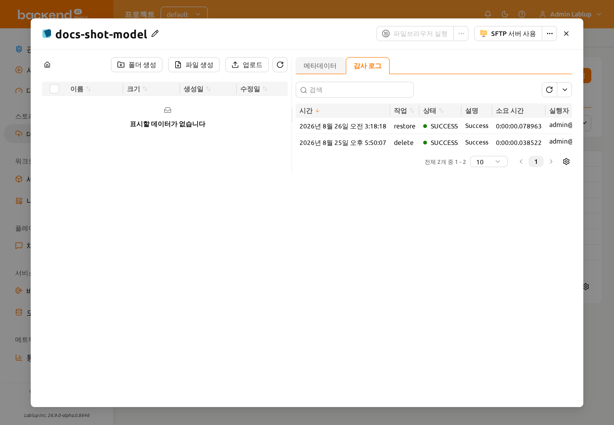
감사 로그는 다음 항목을 순서대로 표시합니다.
- 시간: 작업이 수행된 시점입니다.
- 작업: 작업 유형입니다(예: 생성, 수정, 삭제).
- 상태: 작업 결과입니다(예: SUCCESS 또는 ERROR).
- 설명: 작업에 대한 추가 세부 정보입니다.
- 소요 시간: 작업에 걸린 시간입니다.
- 실행자: 작업을 수행한 사용자이며, "이메일 (id)" 형식으로 표시됩니다.
시간, 작업, 상태, 실행자 항목으로 로그를 필터링할 수 있습니다.
폴더 이름 변경#
스토리지 폴더의 이름을 변경할 권한이 있으면, 폴더 상세 드로어를 열고 폴더 이름 옆의 수정 버튼을 클릭하여 이름을 변경합니다. 이름 변경 작업은 상세 드로어 내부에서만 수행됩니다.
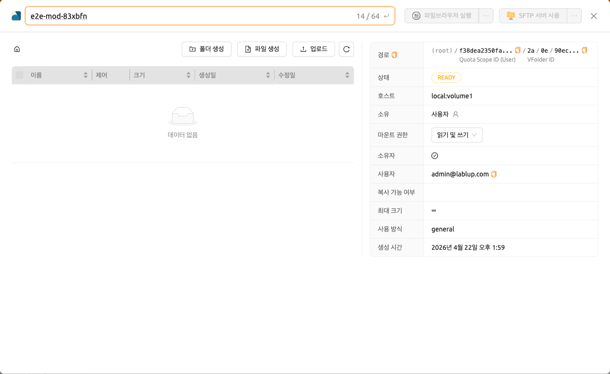
폴더 삭제하기#
스토리지 폴더를 삭제할 권한이 있으면, 휴지통 버튼을 클릭하여 폴더를 휴지통 탭으로 이동시킵니다. 휴지통 탭으로 이동된 폴더는 삭제 대기(delete-pending) 상태로 표시됩니다.
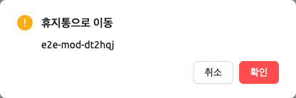
여러 폴더 한 번에 삭제하기#
삭제할 폴더들의 체크박스를 선택하면 폴더 목록 위에 선택 요약({개수}개 선택됨)과
휴지통 버튼이 나타납니다. 휴지통 버튼을 클릭하면 선택한 폴더 전체에 대한
휴지통으로 이동 확인 창이 열립니다.
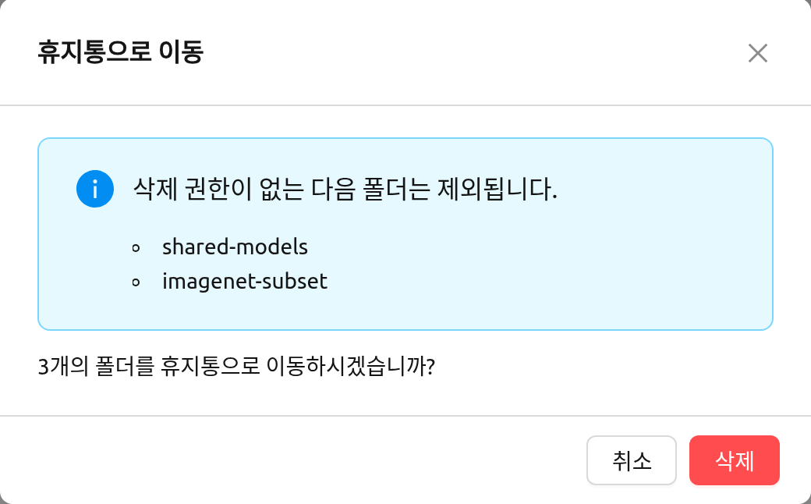
선택한 폴더 중에 삭제 권한이 없는 폴더가 있으면 모달에 *"삭제 권한이 없는 다음 폴더는 제외됩니다."*라는 제목의 알림이 나타나고 해당 폴더 이름이 함께 표시됩니다. 삭제를 진행하기 전에 이 목록을 꼭 확인하세요. 권한이 없는 폴더를 뺀 나머지만 휴지통 탭으로 옮겨지고, 알림 아래의 확인 메시지도 실제로 이동하는 폴더 개수만 표시합니다.
폴더 복원 및 영구 삭제#
이 상태에서 이름 열에 있는 해당 폴더 행의 복원 버튼을 클릭하면 폴더가 복원됩니다. 폴더를 영구적으로 삭제하려면 같은 행의 휴지통 버튼을 클릭합니다. 영구 삭제가 실제로 시작된 이후에는 폴더를 복원하거나 다시 삭제할 수 없으며, 해당 행의 두 버튼은 *"이 폴더는 이미 삭제가 시작되었습니다."*라는 사유와 함께 비활성화됩니다. 폴더에 대한 삭제 권한이 없는 경우에도 해당 행의 휴지통 버튼을 사용할 수 없습니다. 예를 들어 삭제가 허용되지 않은 공유 폴더나 프로젝트 폴더가 여기에 해당하며, 이때 버튼에는 *"삭제 권한이 없습니다"*라는 사유가 표시됩니다.
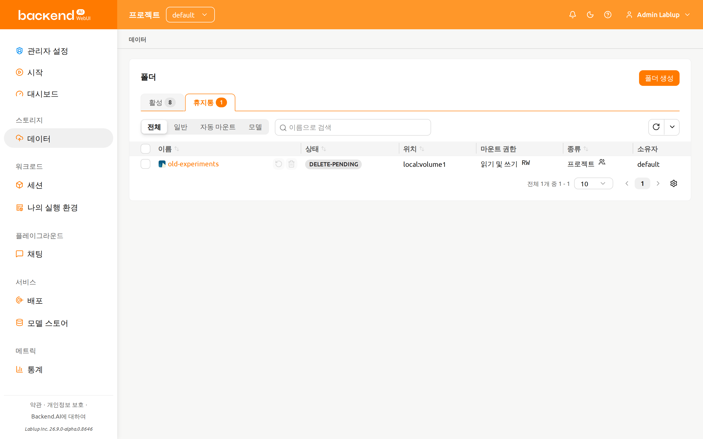
폴더 이름을 입력하라는 확인 모달이 나타납니다. 폴더 이름을 정확하게 입력하면 영구 삭제 버튼이 활성화되며, 이를 클릭하면 폴더가 완전히 삭제됩니다.
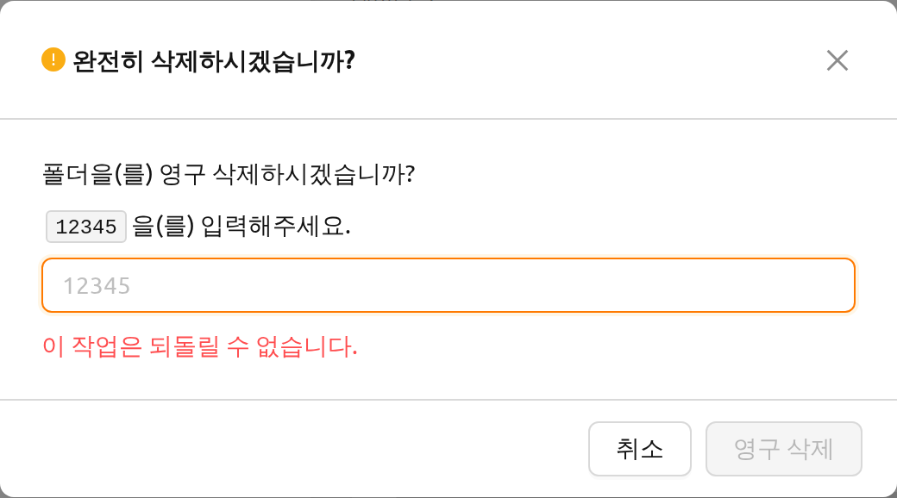
삭제하려는 폴더가 모델 카드와 연결되어 있는 경우, 확인 모달에는 "연결된 모델 폴더도 함께 삭제" 옵션과 *"연결된 모델 폴더를 삭제하면 해당 폴더를 사용하는 모든 모델 카드도 함께 삭제됩니다."*라는 경고 메시지가 추가로 표시됩니다. 이 상태에서 삭제를 진행하면 해당 스토리지 폴더를 기반으로 하는 모든 모델 카드가 영구적으로 제거됩니다. 폴더의 파일만 삭제되는 것이 아닙니다. 삭제를 확정하기 전에 함께 삭제되는 모델 카드 목록을 반드시 확인하세요. 이 작업은 되돌릴 수 없습니다.
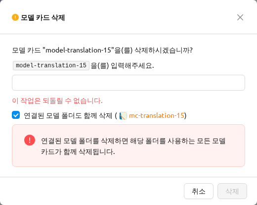
파일 브라우저 사용하기#
Backend.AI는 FileBrowser를 지원합니다. FileBrowser는 웹 브라우저에서 원격 서버의 파일을 관리하도록 도와주는 프로그램입니다. 특히 사용자의 로컬 머신에서 디렉토리를 업로드할 때 유용합니다.
현재 Backend.AI에서는 FileBrowser를 연산 세션 내에서 실행되는 애플리케이션 형태로 제공합니다. 따라서 다음과 같은 최소 조건이 필요합니다.
- 최소 1개 이상의 연산 세션을 생성할 수 있어야 합니다.
- 최소 CPU 1 core, 메모리 512 MB 이상의 여유 자원이 있어야 합니다.
- FileBrowser를 지원하는 이미지가 설치되어 있어야 합니다.
FileBrowser는 두 가지 방법으로 사용할 수 있습니다.
- 스토리지 폴더의 파일 탐색기 대화 상자에서 FileBrowser를 실행합니다.
- 세션 페이지에서 FileBrowser 이미지로 연산 세션을 직접 생성합니다.
폴더 탐색기에서 FileBrowser 실행#
데이터 페이지로 이동한 후 원하는 스토리지 폴더의 탐색기 대화 상자를 엽니다. 폴더 이름을 클릭하여 파일 탐색기를 엽니다.
탐색기 우측 상단의 파일브라우저 실행 버튼을 클릭합니다.
FileBrowser가 새 창에서 열립니다. 탐색기를 열었던 스토리지 폴더가 FileBrowser의 루트 디렉토리가 됩니다. FileBrowser 창에서 디렉토리와 파일을 자유롭게 업로드하고, 수정하고, 삭제합니다.
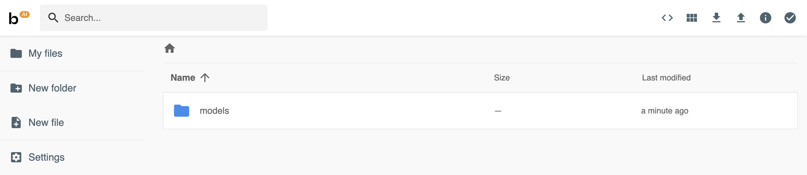
사용자가 파일브라우저 실행 버튼을 클릭하면 Backend.AI는 자동으로 FileBrowser 전용 연산 세션을 하나 생성합니다. 따라서 세션 페이지에서 FileBrowser 연산 세션이 조회됩니다. 이 연산 세션을 삭제하는 것은 사용자의 몫입니다.
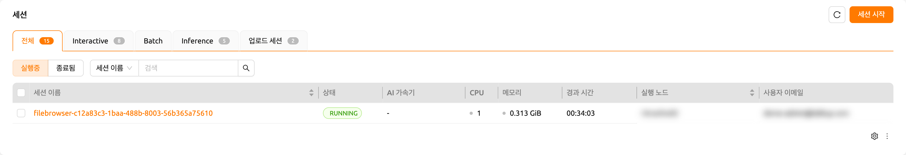
FileBrowser 창을 실수로 종료하여 다시 열고자 한다면, 세션 페이지로 가서 해당 FileBrowser 연산 세션의 애플리케이션 버튼을 클릭하면 됩니다.
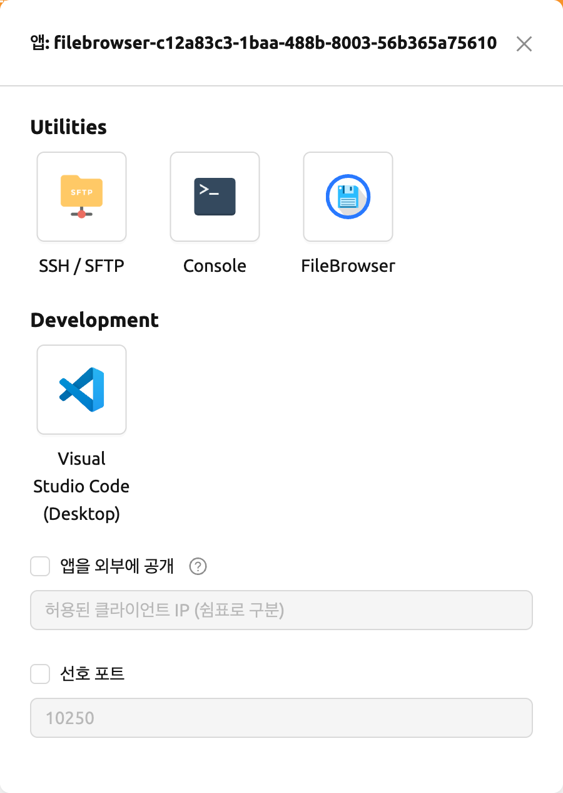
탐색기에서 파일브라우저 실행 버튼을 다시 클릭하면 새로운 연산 세션이 생성되어
총 두 개의 FileBrowser 세션이 나타납니다.
FileBrowser 이미지로 연산 세션 생성하기#
FileBrowser를 지원하는 이미지를 선택하여 연산 세션을 직접 생성할 수도 있습니다. 스토리지 폴더에 접근하려면 최소 하나 이상의 스토리지 폴더를 마운트해야 합니다. 아무 스토리지 폴더를 마운트하지 않아도 FileBrowser 사용에는 문제가 없지만, 연산 세션이 종료되면 업로드하거나 수정한 모든 파일이 삭제됩니다.
FileBrowser의 루트 디렉토리는 /home/work입니다. 따라서 해당 연산 세션에
마운트된 모든 스토리지 폴더에 접근할 수 있습니다.
FileBrowser 기본 사용법#
여기에서는 Backend.AI에서의 FileBrowser 기본 사용법을 소개합니다. FileBrowser의 대부분의 조작은 직관적이지만, 보다 자세한 안내가 필요하다면 FileBrowser 공식 문서를 참고하세요.
FileBrowser로 로컬 디렉토리 업로드하기
FileBrowser는 로컬 디렉토리의 트리 구조를 그대로 유지하면서 업로드하는 기능을 지원합니다. FileBrowser 창 우측 상단의 업로드 버튼을 클릭한 후 Folder 버튼을 클릭합니다. 로컬 파일 탐색 대화 상자가 나타나면 업로드하려는 디렉토리를 선택합니다.
읽기 전용 폴더에 파일을 업로드하는 경우, FileBrowser가 서버 에러를 표시합니다.

다음과 같은 구조를 가진 폴더를 업로드해 보겠습니다.
foo
+-- test
| +-- test2.txt
+-- test.txtfoo 디렉토리를 선택하면 디렉토리가 정상적으로 업로드됩니다.

드래그 앤 드롭으로 로컬 파일과 디렉토리를 업로드할 수도 있습니다.
파일 또는 디렉토리를 다른 디렉토리로 이동하기
FileBrowser에서 스토리지 폴더 내의 파일이나 디렉토리도 이동할 수 있습니다. 다음 단계를 따라 파일이나 디렉토리를 이동합니다.
- FileBrowser에서 이동할 디렉토리 또는 파일을 선택합니다.
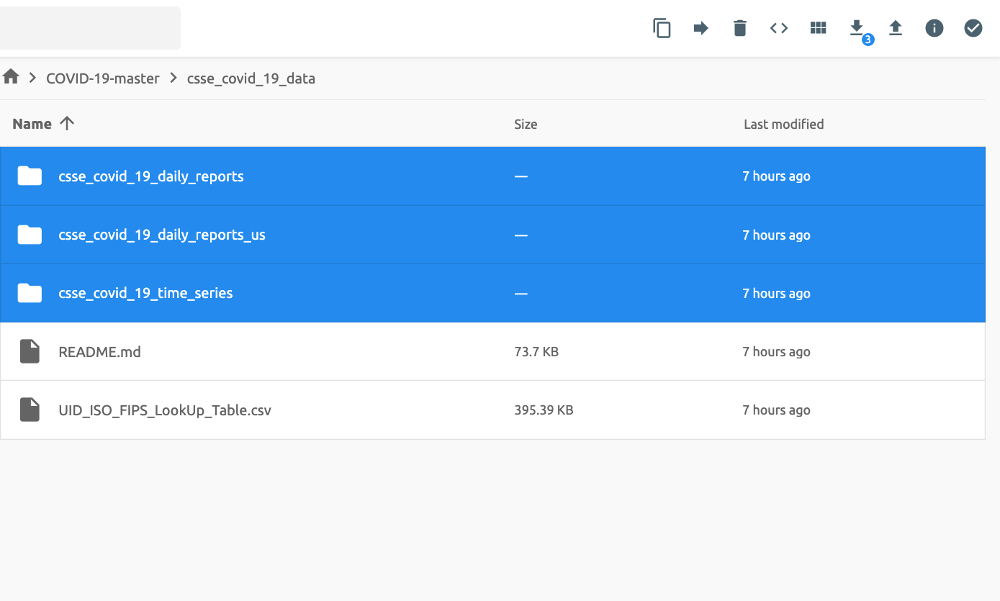
- FileBrowser 우측 상단의
화살표버튼을 클릭합니다.

- 이동할 대상 위치를 선택합니다.

Move버튼을 클릭합니다.
이동 작업이 정상적으로 완료됩니다.

현재 FileBrowser는 연산 세션 내의 애플리케이션으로 제공됩니다. 세션을 생성하지 않고 독립적으로 실행할 수 있도록 업데이트할 계획입니다.
SFTP 서버 사용하기#
Backend.AI는 데스크톱 앱과 웹 기반 WebUI 모두에서 SSH / SFTP 파일 업로드를 지원합니다. SFTP 서버를 사용하면 안정적인 데이터 스트림으로 파일을 빠르게 업로드할 수 있습니다.
시스템 설정에 따라, 파일 대화 상자에서 SFTP 서버를 실행하는 것이 허용되지 않을 수 있습니다.
데이터 페이지의 폴더 탐색기에서 SFTP 서버 실행#
데이터 페이지로 이동한 후 원하는 스토리지 폴더의 파일 탐색기 대화 상자를 엽니다. 폴더 버튼 또는 폴더 이름을 클릭하여 파일 탐색기를 엽니다.
탐색기 우측 상단의 SFTP 서버 사용 버튼을 클릭합니다.
SSH / SFTP 연결 대화 상자가 나타납니다. 새로운 SFTP 세션이 자동으로 생성됩니다. (이 세션은 자원 점유에 영향을 주지 않습니다.)
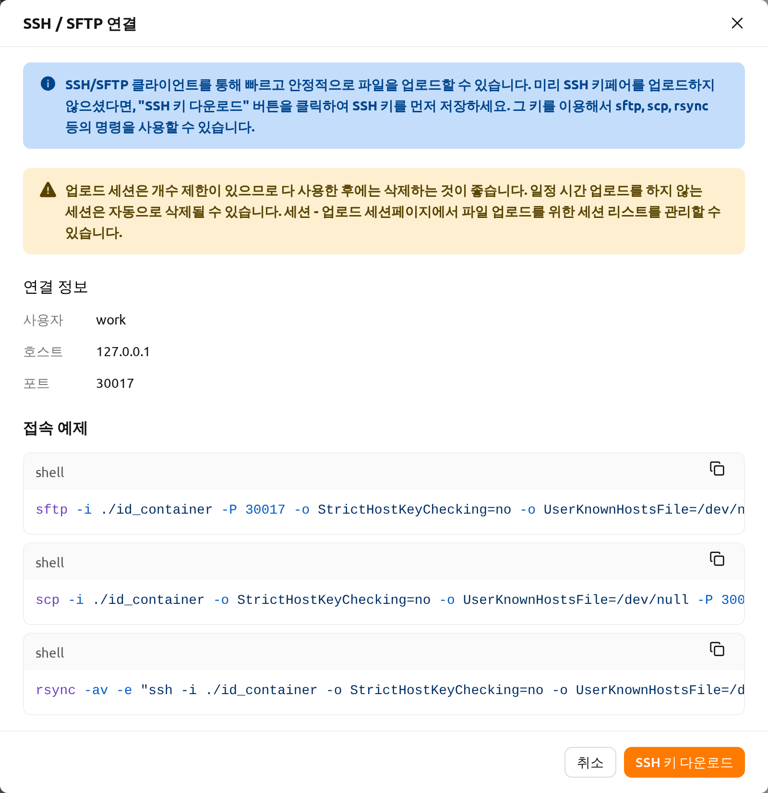
연결을 위해 SSH 키 다운로드 버튼을 클릭하여 SSH 개인 키(id_container)를 다운로드합니다. 또한 호스트와 포트 번호를 기억해 두세요. 이후 대화 상자에 표시된 연결 예시 코드로 세션에 파일을 복사하거나, 다음 가이드를 참고할 수 있습니다: SFTP 연결 가이드. 파일을 보존하려면 스토리지 폴더로 파일을 전송해야 합니다. 또한 일정 시간 동안 전송이 없으면 세션이 자동으로 종료됩니다.
SSH 키페어를 업로드하면 id_container가 사용자의 SSH 개인 키로 설정됩니다.
따라서 SSH로 컨테이너에 연결할 때마다 키를 다운로드할 필요가 없습니다.
자세한 내용은 사용자 SSH 키페어 관리 섹션을 참고하세요.
파이프라인 폴더#
이 탭에는 FastTrack에서 파이프라인을 실행할 때 자동으로 생성되는 폴더 목록이 표시됩니다. 파이프라인이 생성되면 각 작업 인스턴스(연산 세션)에 대해 새로운 폴더가 생성되어 /pipeline 아래에 마운트됩니다.
자동 마운트 폴더#
데이터 페이지에는 자동 마운트 폴더 탭이 있습니다. 이 탭을 클릭하면 이름이 점(.)으로 시작하는 폴더 목록이 표시됩니다. 폴더를 생성할 때 이름을 점(.)으로 시작하도록 지정하면, 폴더 탭이 아닌 자동 마운트 폴더 탭에 추가됩니다. 자동 마운트 폴더는 연산 세션 생성 시 수동으로 마운트하지 않아도 홈 디렉토리에 자동으로 마운트되는 특별한 폴더입니다. 이 기능을 활용하여 .local, .linuxbrew, .pyenv 등의 스토리지 폴더를 생성해 사용하면, 연산 세션의 종류가 달라져도 변하지 않는 사용자 패키지나 환경을 구성할 수 있습니다.
자동 마운트 폴더의 사용법에 대한 자세한 내용은 자동 마운트 폴더 사용 예시 섹션을 참고하세요.
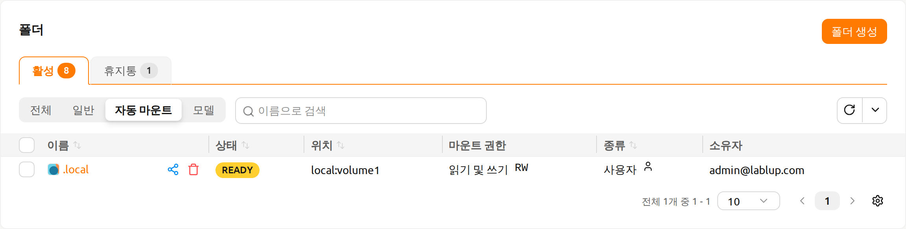
모델 폴더#
모델 탭은 간편한 배포를 지원합니다. 배포에 필요한 입력 데이터와 학습 데이터를 포함한 필요한 데이터를 모델 폴더에 저장할 수 있습니다.
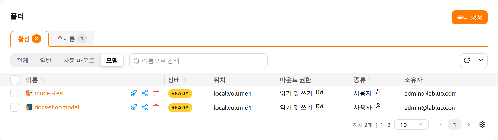
모델 폴더 목록에서 폴더의 서비스로 배포 버튼을 클릭하면, 별도의 설정 파일 없이 배포 프리셋을 선택해 바로 배포할 수 있습니다. 자세한 내용은 빠른 배포 섹션을 참고하세요.